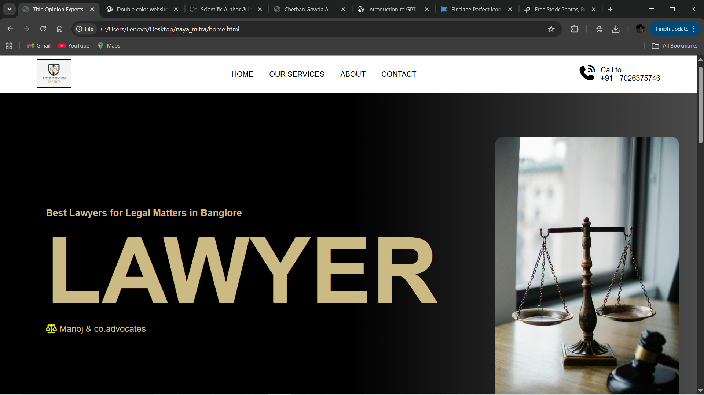
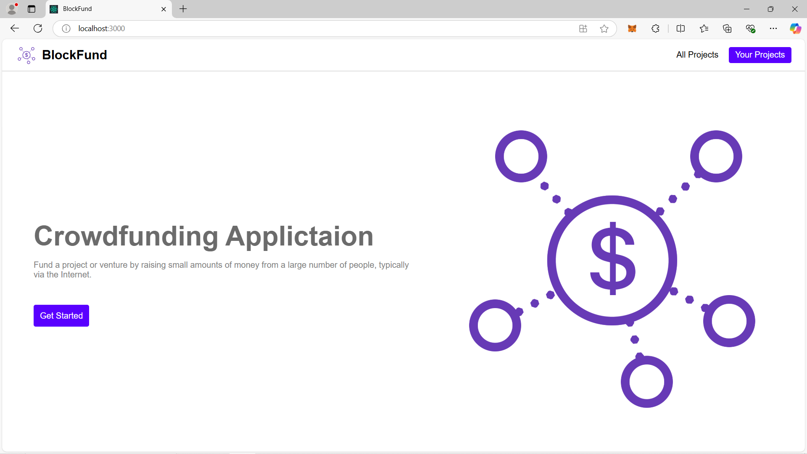
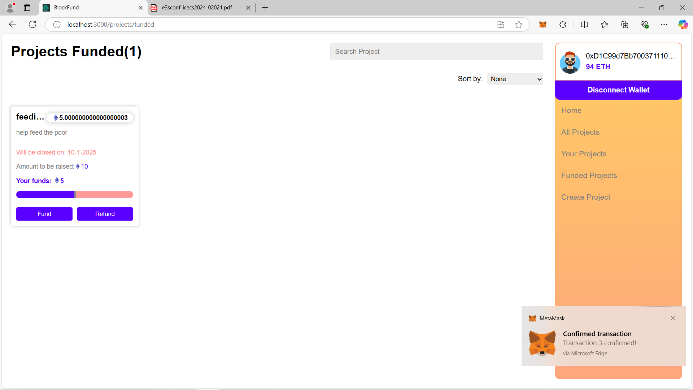

Role: Full-stack Developer.
Technologies Used: HTML, CSS, JavaScript,MYSQL.
Developed a responsive and user-centric web platform designed to simplify property documentation, title verification, and registration services. The project enables clients to securely upload property documents, track verification progress, and receive certified legal opinions from real estate experts.
Implemented dynamic service sections covering property legal verification, sale agreements, sale deeds, and Khatha services, providing an end-to-end digital experience. Integrated features like online consultation requests, service pricing display, and process timelines to enhance user engagement and transparency.
This project emphasizes clean UI/UX design, reliable backend connectivity, and secure handling of client data — offering a professional, technology-driven approach to real estate legal services



Role: Blockchain & Front-End Developer
Technologies Used: Solidity, Ethereum, React.js, HTML, CSS, JavaScript, MetaMask, Ganache
Developed a decentralized crowdfunding platform leveraging blockchain technology to ensure transparency, security, and immutability in fundraising campaigns. The system allows users to create, manage, and contribute to campaigns through smart contracts built with Solidity and tested in local blockchain environments using Ganache.
Integrated MetaMask for secure wallet-based authentication and seamless transaction management directly from the browser. Designed and implemented a responsive React.js frontend, featuring components for campaign creation, contribution tracking, and transaction status updates.
This project demonstrates strong proficiency in DApp development, smart contract integration, and user-centric decentralized system design, providing a secure and transparent alternative to traditional crowdfunding platforms.